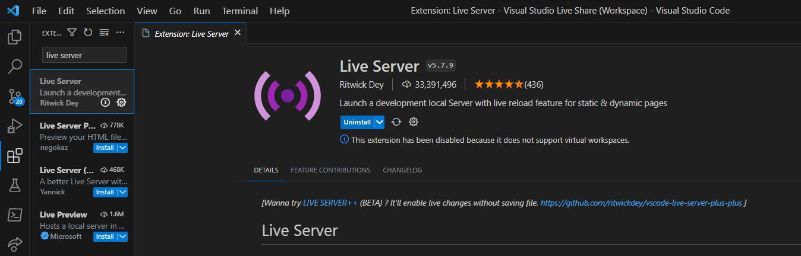

Stap 1: VSC installeren + Mappenstructuur downloaden
1.1 Download Visual Studio Code via deze link
VSC of Visual Studio Code is een teksteditor die specifiek ontworpen is voor het bewerken van de broncode van computerprogramma's door programmeurs, hiermee gaan we dus werken!

1.2 Download de mappenstructuur via deze link
Deze mappenstructuur bevat de basis voor het maken van een website. De mappenstructuur bevat de volgende mappen:
- css
- img
- js
1.3 Installeer de live server extensie
De live server extensie zorgt ervoor dat je de website kan bekijken in je browser. Dit is handig omdat je dan direct kan zien of de code die je schrijft werkt.
Start de live server door rechtsonder de blauwe balk te klikken op "Go Live", je standaard browser zal nu gestart worden!